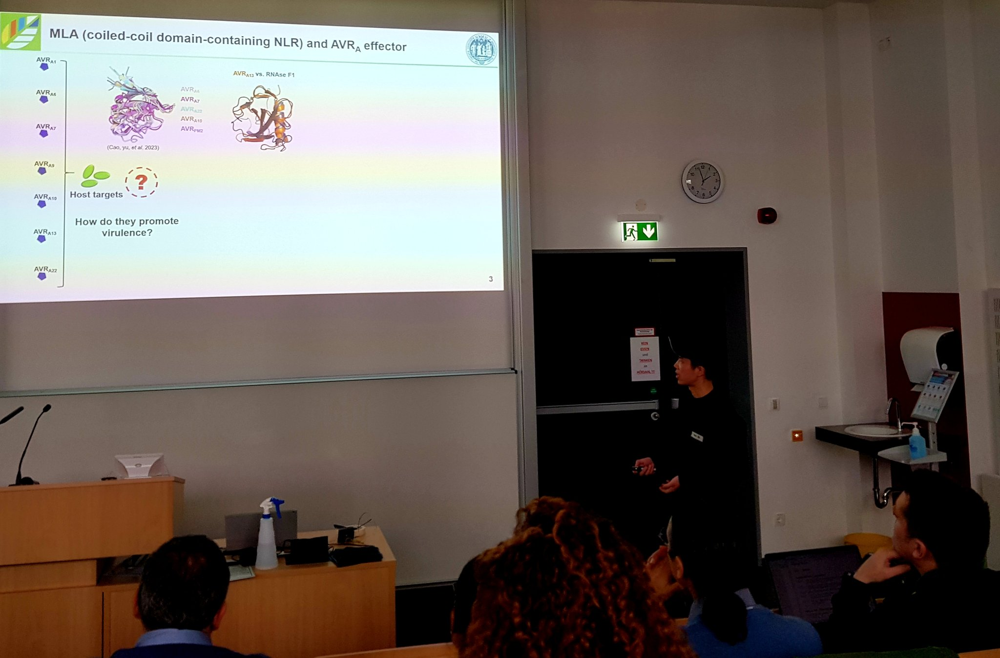
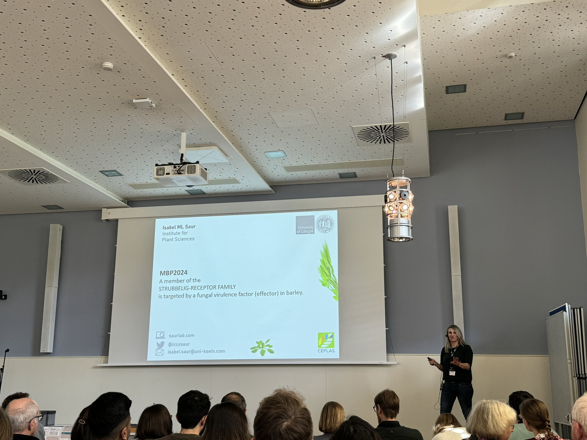
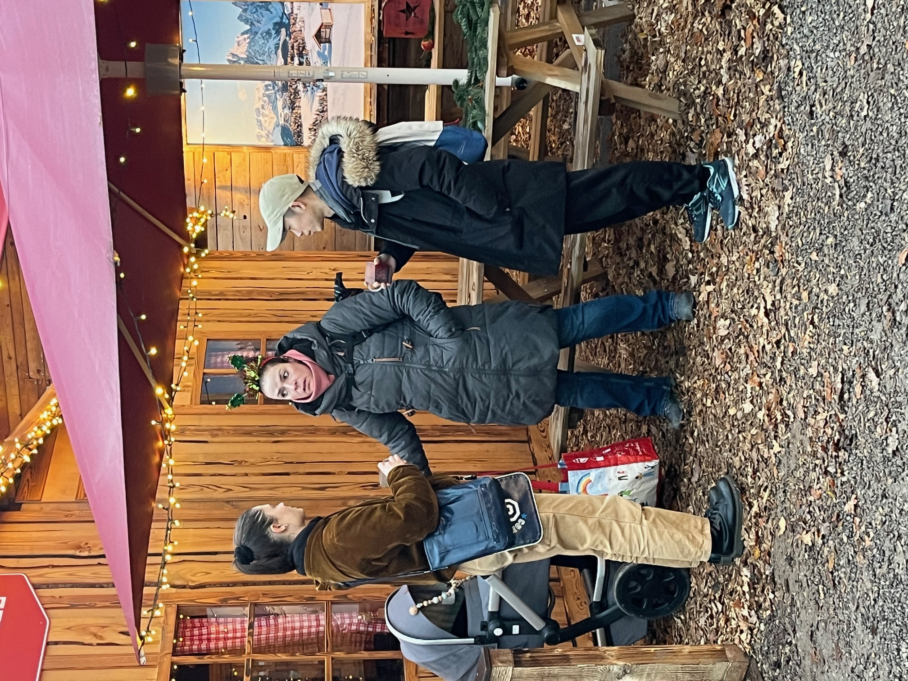
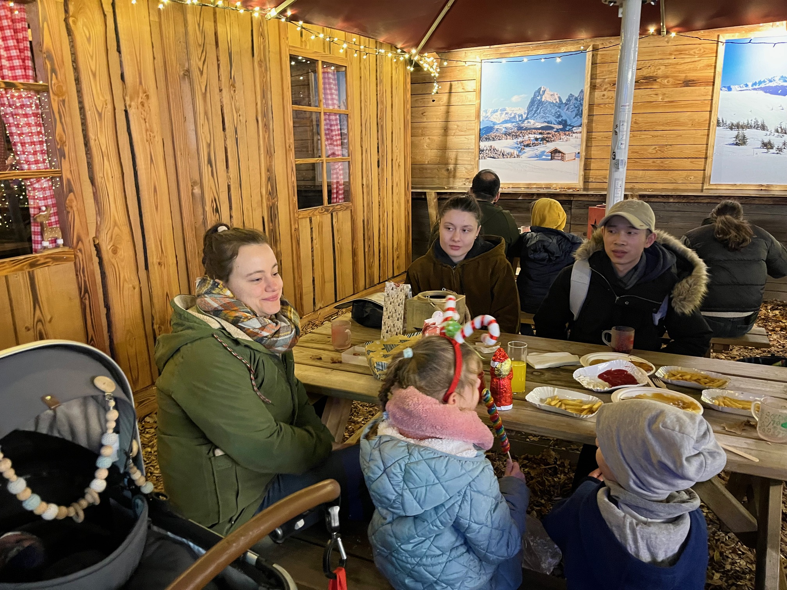
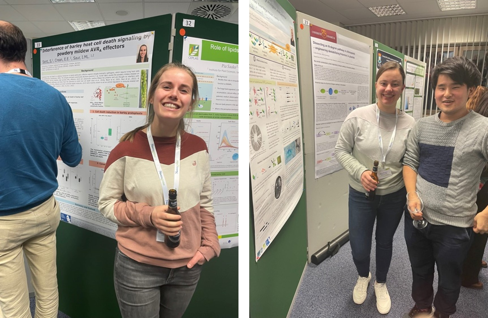

News
June 2024 - Conference time!
Izzy chairs the ‘Disease Resistance Mechanisms’ session at the 2024 International Plant
Molecular Biology Congress in Cairns, Australia and presents the
teams work. The other session speakers are: Thorsten Nuernberger (ZMBP),
Natsumi Maruta (UQ), Simon Williams (ANU) and Chih-Hang Wu (Academia
Sinica). What a great meeting and great session! Thx to all speakers and
the audience
March 2024 - Conference time!
Both, Wei and Merle present their work on the AVRa virulence function at the 43rd Annual meeting of the DPG Working Group Host-Parasite-Interaction in Bonn.

But that is not all, Wei and Merle’s work is also presented by Isabel at the 37th Conference of the Section ’Plant Physiology and Molecular Biology of the German botanical Society (MBP2024)

January 2024 - Sophie starts her PhD
Welcome back in the team! Really great to have you!
December 2023
winter is coming….Xmas get together of the group. Bit smaller this year, we will go for a big party next year :-)


November 2023 - Publication alert
We contributed to this great work from the Zuccaro group published in
Current Biology. It involves every aspect, from MS to genetics…good read
A
GH81-type β-glucan-binding protein enhances colonization by mutualistic
fungi in barley.
July 2023 - Publication alert
Published - Whop Whop: A
dominant-negative avirulence effector of the barley powdery mildew
fungus provides mechanistic insight to barley MLA immune receptor
activation.
July 2023 - Sophie defends her Master thesis
OMG we did not take a picture! But I guess it is too late. Sophie did a great job in defending her project on cell death in monocots and AVRa-mediated cell death inhibition
June 2023 - Publication alert
We contributed to this work from the Wulff group (KAUST) published in
Nature genetics. Kinase domain containing R protein in wheat. Totally
unusual (at least to date….)…worth a read. The wheat stem
rust resistance gene Sr43 encodes an unusual protein kinase.
May 2023 - Publication alert
Wei’s work on proximity-labeling of Ustilago See1 targets in maize:
Combination
of in vivo proximity labeling and co-immunoprecipitation identifies the
host target network of a tumor-inducing effector in the fungal maize
pathogen Ustilago maydis.
March 2023 - Conference alert
Isabel holds a talk at the 42nd Annual meeting of the DPG Working Group Host-Parasite-Interaction in Freising.
February 2023 - Conference alert
Merle & Sophie present at the Molecular Biology of Plants Conference in Hennef. Sophie got a travel grant to attend the meeting!! WhopWhopp - Good job, great posters!

January 2023 - Publication alert
We uploaded our manuscript on A
dominant-negative avirulence effector of the barley powdery mildew
fungus provides mechanistic insight to barley MLA immune receptor
activation. The manuscript was evaluated positively and is currently
in revision for a soon publication :-)
December 2022
winter is coming….Xmas party and Sophie’s lovely advent calendar
November 2022 - Some members dared to enter UoC on 11.11.22
Of course, they dressed up to not appear too conspicuous among all the Jecken @ Zülpicher Str. Alaaf!
October 2022 - Retreat with AG Döhlemann
in St. Goar. Great science and great fun!

August 2022 - Conference alert
Merle presents a poster on her work on AVRA effectors at the Botaniktagung of the German Society for Plant Sciences, DBG. Very well done!
June 2022 - Travel grant for Merle - Great job!
Merle receives a travel grant to attend the 2022 Botaniktagung of the GGerman Society for Plant Sciences, DBG. Great job!
June 2022 - New group member
Sophie starts her work on AVR-mediated cell death inhibition. Welcome Sophie!
May 2022 - Another group dinner
@ Duma. Last time together
with our first SHK Judith, who is off to the US for her Bachelor ’s
thesis

May 2022 - Publication alert
We published a review in Essays in Biochemistry: Evolution of resistance (R) gene specificity. Pre-print available on Zenodo
April 2022 - Conference alert
The Saur lab attend this years French-German Workshop on Biotrophy and Plant Immunity AND both, Wei and Isabel gave an oral presentation! Thanks for having us!

April 2022 - Publication alert
With our collaborators, we published in New Phytologist: The stem rust effector protein AvrSr50 escapes Sr50 recognition by a substitution in a single surface-exposed residue.
February 2022 - First group dinner
@ La barra -cava y más-. But we forgot to take a picture….. :-(
February 2022
Big welcome to Merle and Wei!! Let’s get started!
January 2022
Emma joins the Lab! Whoop Whoop!
September 2021 - Conference alert
Isabel presents our newly etablished group’s projects @ the annual Powdery Mildew workshop. Meant to be in Zürich, but moved online instead…. :-(
September 2021
Saur Lab (AG Saur) starts @ the Institute for Plant Sciences, University of Cologne. Lots of stuff to organize now!
© Isabel Saur